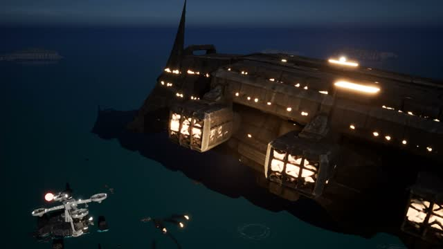
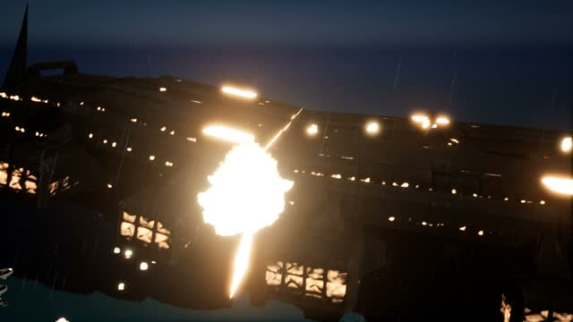
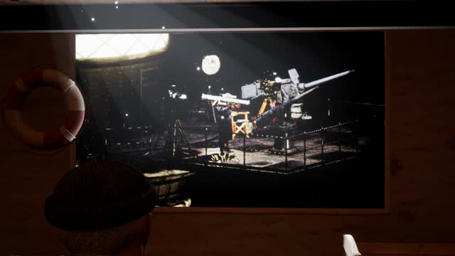
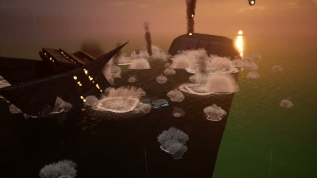

FYR GLEMT
FYR
A lighthouse defence for Epic's 2026 AI MegaJam (theme: Director's Cut), made in four days by one developer directing AI agents
Plan the night on a chart in the keeper's hut, walk out into the storm, and fight from the tower while your turrets fire on their own.
Stop the night at any moment to change the plan. Lose it, and you play it again.

By the numbers counted Sun 15 Nov, 22:10
- 41,739 lines of C++ game code
- 135 Rodin jobs (3D models and rigs)
- 130 kinds of 3D model in the game
- 596 pictures from the image model
- 275 sound effects, all synthesised
- 50 spoken lines
- 8 pieces of music
- 16 lanes of agents in the rebuild
- 513 commits to the game's repository
How each number was counted
- 41,739 lines of C++ game code
- Non-empty lines in the 83 source files of the game (game/Source), all written by the coding agents during the jam.
- 135 Rodin jobs (3D models and rigs)
- Distinct generation and rigging ids in the job records of the asset folders, the prompt files and the agents' notes, from 12 November 06:00 on. Not every job became a model in the game; several were tries that failed and were sent again.
- 130 kinds of 3D model in the game
- Model folders in the game's content (Content/Fyr/Models): Rodin models, local 3D models and models built in Blender by our own scripts, together.
- 596 pictures from the image model
- Picture files the image model wrote for FYR's own picture jobs (one file a seed) from 12 November 06:00 on. Cut-outs are left out. Most were references for 3D models; none is in the game as it is.
- 275 sound effects, all synthesised
- Sound effect files imported into the game (Content/Fyr/Audio/SFX), each made by our own synthesis code; one kind of sound often has several variants.
- 50 spoken lines
- Voice lines in the game (Content/Fyr/Audio/Voice), each counted once however many takes of it are in; 92 voice files in all.
- 8 pieces of music
- Music files in the game (Content/Fyr/Audio/Music), made with the local music model.
- 16 lanes of agents in the rebuild
- Lanes of the rebuild that have a written brief (BRIEF.md, and BRIEF-2.md for a lane's second round), each worked by one Claude Code agent at a time, most in their own git worktree; the integrator, the verifier and this log are lanes too. A lane whose agent was restarted counts once.
- 513 commits to the game's repository
- Commits in the game's own (private) repository; its history shows when each thing was made.
Newest pictures from the running game

The title screen with its tower again, from the game itself
From the running game Sun 15 Nov, 20:25

Now: in the frame, lit, its camera showing
From the running game Sun 15 Nov, 19:30

First recording: the drone was placed just outside the frame
From the running game Sun 15 Nov, 19:30

The drone's film of the kill, on the wall of the hut
From the running game Sun 15 Nov, 19:30

After: through his eyes; the drone films him meanwhile
From the running game Sun 15 Nov, 19:30
Before: the drone's view filled the screen
From the running game Sun 15 Nov, 19:30


The gallery: all 85 pictures in order, with before and after
Latest from the log
-
Ready for the hand-in
Sunday evening, the last entry before the developer hands FYR in. He played the new package and found that everything works. The last fixes: the sea and the rain were too loud, the title screen lost its tower, and DLSS…
-
The fourth night's finale in the developer's order, and a voice you can hear
Sunday evening. The developer played the packaged game on Easy through the fourth night, and the finale did not play the way the gameplay video shows it. He described the order it should have. The kill is now seen…
-

The finale fixed, and recorded again for the video From late Saturday night to 03:00 on Sunday. Six faults in the fourth night's finale and the ending were fixed, with before and after pictures. The second half of the gameplay video was recorded again with the fixes in…
Look inside
- How it is made13 toolsWho does what, every tool with its licence, and what was prepared before the jam.
- The log16 entriesDay by day and hour by hour: what was built, with which tool and prompt.
- Gallery85 picturesEvery picture in order, generated ones with their prompts, with before and after.
- What went wrong21 failuresNewest: The new recording showed a fault that no earlier take had